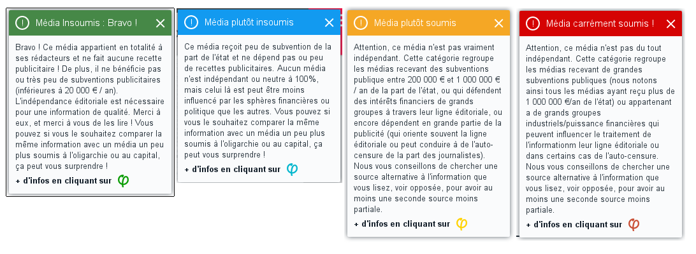

Merci d’avoir installé le Décodex Insoumis !
Comment ça marche ?
Le Décodex insoumis est un outil réalisé par l’équipe des Insoumis Numériques. Il vous permet d’afficher des informations sur les sites que vous visitez en parallèle de votre navigation par deux moyens :
-
Des informations détaillées qui apparaîtront en haut à droite de votre écran lorsque vous consulterez les sites (pop-up). Elles s’afficheront de la manière suivante :
Notifications  -
Des informations à votre disposition en un clic à tout moment, via l’icône des Insoumis en haut à droite de votre navigateur :
Fenêtre 
Réglages avancés
Par défaut, le Décodex Insoumis affiche les informations détaillées pour chaque site dont nous avons connaissance. Mais vous pouvez vous-même paramétrer le Décodex Insoumis selon vos attentes. Pour chaque catégorie, vous pouvez choisir si vous souhaitez avoir des informations détaillées ou non.
Réglez ci-dessous le Décodex selon vos préférences
Vous pourrez retrouver à tout moment les informations disponibles sur une source en cliquant sur l’icône desInsoumiss en haut à droite de votre navigateur, puis sur l'icône en forme d'engrenage.
Vous consultez un site qui n’est pas dans notre base de données ? NE PANIQUEZ PAS !